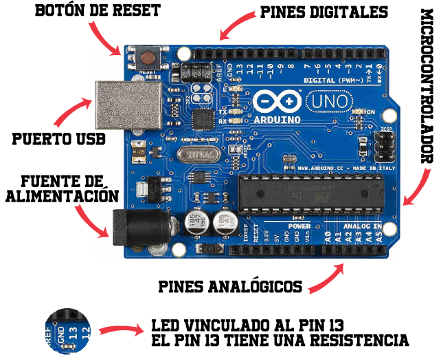
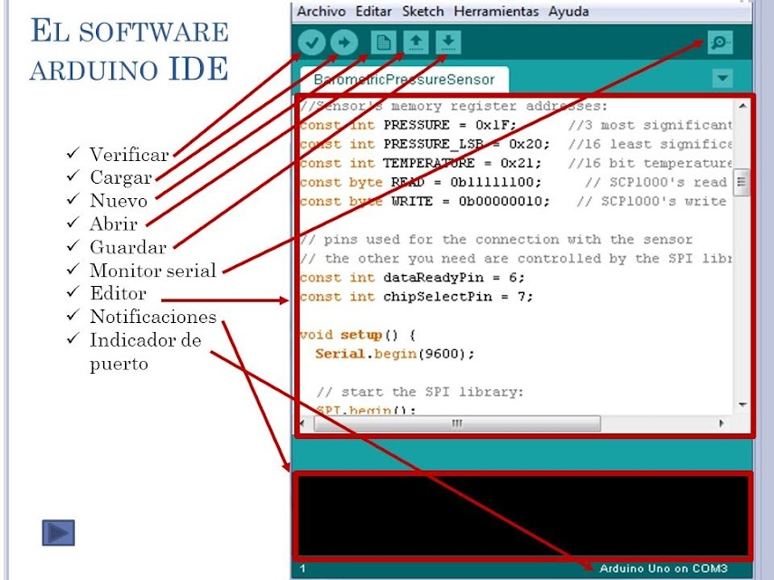
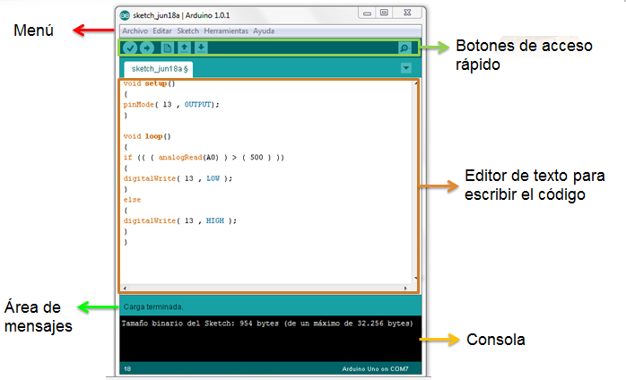

¿Qué es Arduino?
Arduino es una herramienta para hacer que los ordenadores puedan sentir y controlar el mundo físico a través de tu ordenador personal.
Es una plataforma de desarrollo de computación física de código abierto, basada en una placa con un sencillo microcontrolador y un entorno de desarrollo para crear software (programas) para la placa.
Puedes usar Arduino para crear objetos interactivos, leyendo datos de una gran variedad de interruptores y sensores y controlar multitud de tipos de luces, motores y otros actuadores físicos.
La placa Arduino
Arduino es una placa o tarjeta controladora, con una serie de entradas y salidas, y que se programa a través del ordenador mediante un lenguaje de programación.
Se puede programar para interactuar con el mundo real obteniendo información de sensores muy variados y controlando luces, motores y actuadores en general.
La placa Arduino más extendida es la UNO, cuyas partes principales son:

El software de Arduino
A diferencia del ordenador que usas normalmente, Arduino no tiene pantalla ni teclado por lo que necesitamos un software ejecutado en un ordenador para escribir programas para la placa Arduino. Este software es lo que llamamos Arduino IDE:


En el siguiente video se explica cómo puedes hacer la descarga, instalación y configuración del programa: